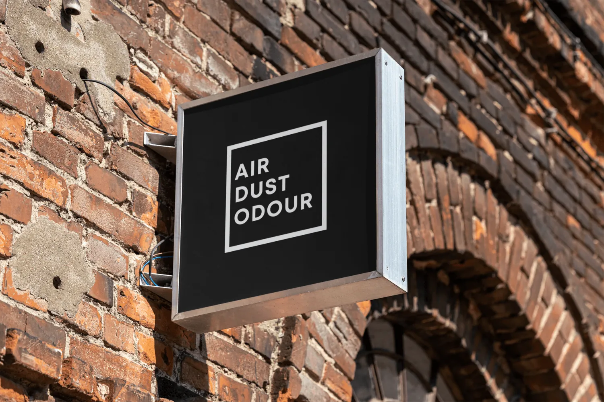

About Air Dust Odour
An environmental consultancy led by a Chartered Environmentalist, delivering air quality, dust, odour, noise and lighting assessments across the UK.

Chartered Expertise, Without the Big-Firm Overheads
Air Dust Odour was founded on a simple idea: planning applications shouldn’t need a large multi-disciplinary firm just to clear an air quality, dust or odour condition. A chartered specialist who picks up the phone, scopes the work honestly and delivers proportionate, defensible reports does the job better, and faster.
We work with planning consultants, housebuilders, contractors and hospitality operators across the UK. From screening assessments for single-plot developments to detailed ADMS-Roads dispersion modelling for larger schemes, every project is led personally by a Chartered Environmentalist.
Our approach is straightforward: scope the assessment proportionately, work to your planning timetable, write reports the planning officer can actually read, and stand behind the conclusions when consultees ask questions. No unnecessary upselling, no surprise fees, no jargon for jargon’s sake.
What Sets Us Apart
Chartered Expertise
Every project is led by Malcolm Pounder, a Chartered Environmentalist (CEnv) and Member of the Institute of Air Quality Management (MIAQM).
Quality Reports
Every report is technically rigorous, clearly written and presented to the standard that planning authorities expect. We take pride in the quality of our work.
Client Focused
We build lasting relationships with our clients through honest advice, responsive communication and a genuine commitment to helping your project succeed.
The People Behind Air Dust Odour
Malcolm runs every project and is your single point of contact, with accounts and operations handled by Malcolm Pounder Sr.
Malcolm Pounder
Founder & Chartered Environmentalist
Malcolm Pounder founded Air Dust Odour to deliver chartered-quality environmental consultancy with the responsiveness and clarity that smaller projects rarely get from larger firms. He has over a decade of hands-on experience in air quality assessment, dust impact assessment and odour assessment for planning applications across the UK.
Malcolm leads every project personally, from scoping and modelling to fieldwork and report writing, using ADMS-Roads, ADMS-Urban and AERMOD for dispersion modelling, and the latest IAQM 2024 V2.2 methodology for dust impact assessments. His clients include planning consultants, housebuilders, contractors and hospitality operators.
Malcolm believes good environmental consultancy reads as plainly as it can without losing technical rigour. Reports are written for the planning officer who has to read them, not just for the file. Quotes are fixed, fees transparent, and timescales honest from the outset. Malcolm read for his degree at Newcastle University.
Malcolm Pounder Sr.
Accounts & Operations
Malcolm Pounder Sr. heads accounts and operations at Air Dust Odour, overseeing invoicing, supplier payments, payroll and the day-to-day financial administration that keeps the consultancy running smoothly.
The father of the firm’s founder, Malcolm Sr. handles the business side so that Malcolm can concentrate on the technical work.
Areas of Expertise
A snapshot of the assessment types Malcolm delivers across the UK, from screening notes for delegated decisions through to detailed assessments for larger schemes.
Air Quality Assessments for Planning
Screening and detailed AQAs for residential, mixed-use and commercial schemes, including sites in or near Air Quality Management Areas, with bespoke ADMS-Roads dispersion modelling and DEFRA background data.
Dust Impact Assessments (IAQM 2024)
DIAs aligned to the latest IAQM 2024 V2.2 thresholds (demolition, earthworks, construction and trackout), with site-specific risk categorisation, mitigation matrices and embedded Dust Management Plans.
CEMP Air Quality & NRMM Compliance
Construction Environmental Management Plan air quality sections, dust suppression specifications and Stage V NRMM compliance strategies for pre-commencement condition discharge.
Restaurant & Kitchen Odour (EMAQ+)
EMAQ+ kitchen extract odour assessments for hospitality fit-outs and Use Class E conversions, stating the level of odour control the method requires for the client’s extract specialist to design and install.
Dispersion Modelling (Industrial & Traffic)
ADMS-Roads, ADMS-Urban and AERMOD modelling for road schemes, biomass boilers, energy centres, waste facilities and process emissions, with monitoring calibration where required.
Workplace Air Quality & Occupational Surveys
Workplace exposure monitoring against Workplace Exposure Limits (WELs) using HSE methods, providing the measured data that informs the employer’s own COSHH assessment, with samples analysed by UKAS-accredited laboratories such as IOM.
Chartered Status & Memberships
Malcolm’s chartered status and professional memberships, each awarded by a UK professional body.
Member of the Institute of Air Quality Management
Professional body for air quality practitioners in the UK, setting standards for assessment and monitoring.
Chartered Environmentalist
Chartered status registered with the Society for the Environment.
Institution of Environmental Sciences
Full Member of the Institution of Environmental Sciences.